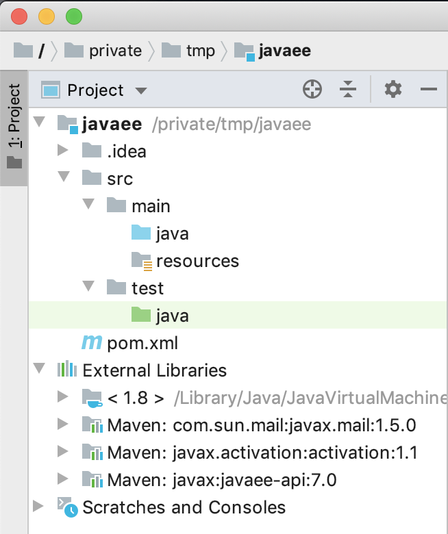

Ce document est mis à disposition selon les termes de la Licence Creative Commons Attribution - Pas d’Utilisation Commerciale - Partage dans les Mêmes Conditions 4.0 International.
2. Mise en place
2.1. Prérequis
Avant de commencer la réalisation de ces travaux pratiques, il est indispensable de disposer des logiciels suivants :
-
Un Atelier de Génie Logiciel professionnel
-
La license Ultimate est gratuite pour les étudiants -
Soit NetBeans IDE
2.2. Instructions pour Maven
Créer un projet Maven avec un POM comportant les caractéristiques suivantes :
-
Un
packagingde typewar -
Une dépendance envers
javax:javaee-api:7.0de typeprovided -
Les
propertiessuivantes :Nom Valeur maven.compiler.source1.8maven.compiler.target1.8failOnMissingWebXmlfalse
Une fois le projet Maven créé, l’importer dans l’IDE de votre choix.
2.3. Instructions pour IntelliJ IDEA
2.3.1. Création de projet
-
Cliquer sur le menu .
-
Dans la fenêtre pop-up qui s’ouvre, sélectionner Import project from external model
-
Cliquer sur Next. Dans la fenêtre suivante, conserver les réglages par défaut :
-
Cliquer sur Next. Dans la fenêtre suivante, le projet Maven doit être pré-sélectionné :
-
Cliquer sur Next. Dans la fenêtre suivante, sélectionner le JDK désiré. Choisir une version 8 (ou plus récente) :
-
Cliquer sur Next. Dans la fenêtre qui s’affiche, sélectionner l’emplacement du projet. Conserver l’emplacement par défaut, qui doit être le même emplacement que celui du projet importé.
-
Cliquer sur Finish.
-
-
L’espace de travail doit afficher une structure similaire à la suivante :

2.3.2. Configuration du serveur d’applications
-
Dans IntelliJ IDEA, cliquer sur le menu :
-
Tout en haut à gauche, cliquer sur +, puis .
-
Dans la popup, cliquer sur Configure au niveau du champ Application server.
-
Indiquer l’emplacement du répertoire d’installation de TomEE :
-
Cliquer sur Finish.
-
-
Dans le champ Name, indiquer TomEE.
-
Cliquer sur OK.
2.3.3. Déploiement de l’application
L’étape de création du projet a normalement permis de déployer virtuellement l’application dans le serveur d’applications. De fait, le lancement du serveur déploiera l’application.
2.3.4. Lancement de l’application
-
Pour construire le projet, cliquer sur .
-
Puis, pour lancer l’application, cliquer sur .
-
Un navigateur se lance et affiche la page http://localhost:8080/ :
DiagnosticSi le navigateur affiche une page de type 404 Not Found, appeler l’enseignant/l’assistant.
-
Avec les connaissances vues en cours, tenter d’expliquer pourquoi cette page est affichée.
2.4. Instructions pour Eclipse IDE
2.4.1. Choix de l’espace de travail
Au lancement de l’IDE, il est nécessaire de choisir un emplacement pour l’espace de travail. Cet emplacement sert de racine pour la création de futurs projets.
2.4.2. Création de projet
| Cette étape sera répétée de nombreuses fois par la suite. Il est conseillé de se familiariser avec. |
-
Cliquer sur le menu .
-
Dans la fenêtre pop-up qui s’ouvre
-
Remplir les champs de la manière suivante :
Champ Valeur Commentaire Project name
servlet
Target runtime
<None>
Le runtime sera configuré plus tard
Dynamic Web Module version
3.0
Configuration
Default configuration
La configuration par défaut comprend Java 8 et l’API Servlet 3.0
-
Cliquer sur Next.
-
-
L’écran suivant permet de configurer la structure du projet. Conserver les valeurs par défaut et cliquer sur Next.
-
Dans l’écran suivant :
-
Conserver les valeurs par défaut pour les champs texte.
-
Sélectionner "Generate web.xml deployment descriptor".
-
Cliquer Next.
-
-
Cliquer Finish.
-
L’espace de travail doit afficher une structure similaire :
2.4.3. Configuration du serveur d’applications
-
Localiser l’onglet "Servers" - par défaut situé en bas. Le sélectionner.
-
Cliquer sur le lien "No servers are available. Click this link to create a new server…". Dans le fenêtre qui s’ouvre :
-
Sélectionner l’adapteur Tomcat v 7.0
-
Dans le champ Server name, indiquer "TomEE v1.7 Server at localhost"
-
Cliquer Next.
-
-
Dans l’écran de configuration de Tomcat :
-
Remplir les champs ainsi :
Champ Valeur Commentaire Name
TomEE v1.7 Server at localhost
Tomcat installation directory
Pointer vers le répertoire d’installation de TomEE à l’aide du bouton Browse
JRE
Java SE 8
Sélectionner un JDK 8 dans la liste déroulante
-
Puis cliquer Next.
-
-
Ajouter le projet précédemment créé en sélectionnant celui-ci puis en cliquant sur le Add.
Puis cliquer sur Finish.
2.4.4. Lancement de l’application
Initialement, le serveur affiche le status [Stopped, Republish].
- Publication
-
La publication consiste à synchroniser les fichiers de configuration et les classes compilées. Cliquer droit et sélectionner Publish.
- Lancement
-
Pour lancer le serveur d’applications, cliquer droit et sélectionner Debug.
L’application est maintenant disponible sous http://localhost:8080/servlet/.
3. Manipulation de servlets
Cette section permet de mettre en oeuvre les concepts liés aux servlets étudiés en cours.
3.1. Premiers pas
L’objectif est de créer un servlet qui écrit dans la log système lorsqu’il est accédé en GET.
|
-
Créer un nouveau package p.e.
ch.hesge.programmation.Il est fortement déconseillé de créer des classes dans le package racine. -
Créer une nouvelle classe de servlet,
SysoutServlet:-
Hériter de
HttpServlet. -
Implémenter la méthode
doGet(): le corps de celle-ci fait un appel à la méthodeSystem.out.println().
-
-
Modifier le descripteur de déploiement
web.xmlpour lier ce servlet au fragment d’URL/sysout.RappelIl faut créer une section
<servlet>pour lier la classe à un nom logique et une section<servlet-mappingpour lier le nom logique à un modèle d’URL. -
Reconstruire l’application et re-démarrer le serveur (cf. ci-dessus).
-
Accéder à http://localhost:8080/sysout via
GET. -
Vérifier la sortie de la console dans l’AGL.
3.2. Configuration par annotations
| L’objectif est de créer un servlet configuré avec les annotations - et non pas dans le descripteur de déploiement. |
-
Copier-coller la classe ci-dessus en
AnnotatedServlet. -
Configurer le servlet via les annotations pour qu’il soit accessible en
GETvia le fragment/annotate. -
Accéder à http://localhost:8080/annotate.
-
Vérifier la sortie de la console dans l’AGL.
3.3. Redirection
| L’objectif est de créer un servlet qui redirige l’utilisateur vers un site externe |
- Via l’API native
-
-
Créer une nouvelle classe de servlet,
RedirectServlet. -
Implémenter la méthode
doGet()pour rediriger l’utilisateur vers un site externe, p.e. https://google.com. -
Configurer le servlet soit par annotations, soit dans le descripteur de déploiement pour être accessible via
/redirect. -
Accéder à http://localhost:8080/redirect.
-
Vérifier que le navigateur redirige vers le site externe précédemment utilisé.
-
- En utilisant un autre mécanisme de bas niveau
-
-
Copier-coller la classe ci-dessus en
RedirectServlet2. -
Remplacer l’implémentation de la méthode
doGet():-
Ajouter le header
Locationavec l’URL précédente -
Renvoyer un code statut HTTP de redirection
-
-
Configurer le servlet pour être accessible via
/redirect2. -
Accéder à http://localhost:8080/redirect2.
-
Vérifier que le navigateur redirige vers le site externe précédemment utilisé.
-
3.4. Ecriture dans la réponse
| L’objectif est de créer un servlet qui écrit directement dans le flux de réponse. |
-
Créer une nouvelle classe de servlet,
WriteServlet. -
Implémenter la méthode
doGet()pour écrire du contenu HTML dans le flux de réponse en utilisantresponse.getWriter().Ne pas oublier-
De fermer le flux de sortie, sinon la page ne sera pas affichée
-
D’indiquer le type MIME afin que le contenu HTML soit correctement interprété et non pas affiché comme du simple texte. Pour information, la plupart des navigateurs "sniffent" le type mais il s’agit d’une faille de sécurité.
-
-
Configurer le servlet pour être accessible via
/write. -
Accéder à http://localhost:8080/write.
-
Vérifier que le navigateur affiche correctement le contenu HTML.
3.5. Utilisation des paramètres
| L’objectif est de lire et d’afficher les paramètres de requête. |
-
Créer un servlet,
ParamServlet. -
Configurer le servlet pour être accessible via
/param. -
Ecrire dans le flux de réponse les paramètres sous forme de tableau HTML :
-
Vérifier l’affichage des résultats avec les URL suivantes :
3.6. Forward
| L’objectif est de créer un servlet qui forward vers une autre ressource. |
-
Créer deux servlets,
InitialServletetForwardServlet. -
Les configurer pour être respectivement accessibles via
/initialet/forward. -
Dans le premier servlet, implémenter le forward vers le second.
-
Dans le second servlet, écrire quelque chose dans le flux de réponse.
-
Accéder à http://localhost:8080/initial.
-
Vérifier que le navigateur affiche ce qui a été écrit dans
ForwardServlet.
3.7. Inclusion
| L’objectif est de créer un servlet qui inclut une autre ressource. |
-
Créer deux servlets,
InitialServlet2etIncludeServlet. -
Les configurer pour être respectivement accessibles via
/initial2et/include. -
Dans le premier servlet, implémenter :
-
une écriture dans le flux de réponse
-
l'include vers le second servlet
-
une seconde écriture dans le flux de réponse
-
-
Dans le second servlet, écrire quelque chose dans le flux de réponse.
-
Accéder à http://localhost:8080/initial2.
-
Vérifier que le navigateur affiche ce qui a été écrit dans le flux de réponse dans le bon ordre.
4. Manipulation de JSP
4.1. Premiers pas
| L’objectif est d’afficher une page HTML. |
-
Créer un fichier HTML
hello.htmldans le répertoire racine de l’application web. -
Accéder à http://localhost:8080/hello.html.
-
Vérifier que le navigateur affiche le contenu.
4.2. Contenu statique
| L’objectif est d’afficher le contenu statique d’une JSP. |
-
Créer une page JSP
hello.jspavec un contenu statique dans le répertoire racine de l’application web. -
Accéder à http://localhost:8080/hello.jsp.
-
Vérifier que le navigateur affiche le contenu statique.
4.3. Contenu dynamique
| L’objectif est d’afficher le contenu dynamique d’une JSP. |
-
Créer une JSP
date.jspavec un contenu dynamique dans le répertoire racine de l’application web. Par exemple, afficher l’instant présent<%= new Date() %>. -
Accéder à http://localhost:8080/date.jsp.
-
Vérifier que le navigateur affiche le contenu dynamique en rafraichissant plusieurs fois la page.
4.4. Implémentation du modèle MVC
| L’objectif est d’implémenter le modèle MVC avec un servlet frontal qui joue le rôle de contrôleur et une JSP qui joue le rôle de la vue. |
-
Créer un servlet
DateServletqui génère la date comme dans la section précédente. -
Implémenter un forward vers la JSP.
-
Le rendre accessible via
/date. -
Créer une JSP
date2.jspdans le répertoire racine de l’application web. -
Faire en sorte que la JSP récupère la date générée par le servlet et l’affiche.
-
Accéder à http://localhost:8080/date.
-
Vérifier que la date est bien affichée.
-
Accéder à http://localhost:8080/date2.jsp.
-
Que se passe-t’il ? Pourquoi ?
4.5. Protection de JSP
Corriger la solution précédente pour que la JSP ne soit pas accessible directement via http://localhost:8080/date2.jsp.
4.6. Exemple complet
Reprendre l’exercice d’affichage des paramètres et l’implémenter avec le modèle MVC.
5. Manipulation de filtres
5.1. Filtre de post-processing
| L’objectif est d’implémenter un filtre qui formate une classe de modèle. |
Soit les classes suivantes :
public class Person {
public final String firstName;
public final String lastName;
public Person(String firstName, String lastName) {
this.firstName = firstName;
this.lastName = lastName;
}
}@WebServlet("/person/*")
public class PersonServlet extends HttpServlet {
@Override
public void doGet(HttpServletRequest req, HttpServletResponse res) {
String firstName = req.getParameter("firstName");
String lastName = req.getParameter("lastName");
Person person = new Person(firstName, lastName);
req.setAttribute("person", person);
}
}Le modèle doit être formaté en fonction du type demandé.
Celui-ci est passé dans le chemin d’URL p.e. /person/xml.
Les données sont passées en paramètre de requête.
Voici un échantillon de requêtes et les réponses attendues :
| Requête | Réponse |
|---|---|
http://localhost:8080/person/xml?firstName=John&lastName=Doe |
|
http://localhost:8080/person/json?firstName=John&lastName=Doe |
|
http://localhost:8080/person/html?firstName=John&lastName=Doe |
PersonFirst Name: JohnLast Name: Doe |
-
A l’aide d’une combinaison des classes fournies, de filtres et de JSP, implémenter la logique ci-dessus.
-
Il existe un grand nombre de combinatoires possibles. Déterminer la meilleure architecture.
-
Justifier le choix.
| Les classes fournies ne doivent pas être modifiées. |
5.2. Filtre d’authentification
| L’objectif est d’implémenter un filtre qui permet de vérifier si l’utilisateur est authentifié. |
Le diagramme suivant indique le flux à implémenter:
Les composants sont :
| Composant | Type | Responsabilité |
|---|---|---|
|
Filtre |
Vérifie si la session utilisateur comporte l’attribut d’authentification |
|
JSP |
Affiche la page de bienvenue dans l’application |
|
JSP |
Affiche la page d’accès refusé, qui comprend un formulaire d’authentification |
|
Servlet |
Stocke l’attribut d’authentification dans la session utilisateur |
6. Gestion de la sécurité
Remplacer l’implémentation précédente par le mécanisme de sécurisation des URL vu en cours.
7. Manipulation d’abonnés au cycle de vie
7.1. Abonnement au cycle de vie des objets de session
| L’objectif est d’écrire dans la sortie système lorsqu’un objet est stocké dans une session utilisateur. |
-
Créer un abonné du type adéquat
-
Enregistrer l’abonné
-
Quand un objet est stocké, l’abonné doit écrire le nom de l’attribut et l’objet dans la sortie système. Si l’objet est multi-valué (tableau ou liste), écrire chacun des éléments qui le compose.
-
Créer un composant de test qui permet de stocker 1 à n objets dans la session sous une clé générique
-
Tester le bon fonctionnement du composant avec les valeurs suivantes :
Clé Valeur "objet"new Object()"date"new java.util.Date()"array"{ new Object(), new Object(), new java.util.Date() }"list"Arrays.asList(new Object(), new Object(), new java.util.Date())
7.2. Abonnement au cycle de vie des sessions
| L’objectif est d’offrir un service qui donne retourne le nombre de sessions utilisateur existantes à un instant t. |
-
Créer un abonné du type adéquat
-
Enregistrer l’abonné
-
Choisir le bon contexte pour stocker le nombre de sessions
-
Lorsqu’une session est créée, incrémenter le compteur de sessions. Lorsqu’elle est détruite, décrémenter le compteur
-
Créer un composant pour afficher le compteur à l’utilisateur
Une session est créée lorsque la méthode HttpServletRequest.getSession() est appelée.
Cette méthode est appelée implicitement lors d’un forward/include de JSP.
|
8. Gestion des erreurs
9. JSTL
Soit la JSP suivante :
<!DOCTYPE html>
<html lang="en">
<head>
<meta charset="UTF-8">
<title>Personnes</title>
</head>
<body>
<h1>Personnes</h1>
<form method="POST" action="<%= request.getContextPath() %>/person">
<label for="firstName">Prénom :</label>
<input type="text" id="firstName" name="firstName"/>
<label for="lastName">Nom :</label>
<input type="text" id="lastName" name="lastName">
<input type="submit" value="Enregistrer">
</form>
<% List persons = (List) request.getAttribute("persons"); %>
<% if (persons != null) { %>
<table>
<thead>
<tr>
<th>Prénom :</th>
<th>Nom :</th>
</tr>
</thead>
<tbody>
<% for (Person person: persons) { %>
<tr>
<td><%= person.getFirstName() %></td>
<td><%= person.getName() %></td>
<% } %>
</tbody>
</table>
<% } %>
</body>
</html>Créer la classe Person et le servlet PersonServlet mappé à person pour que le formulaire crée et affiche les personnes.
L’affichage se fait via un GET au mapping person.
9.1. Utilisation des librairies JSTL
Remplacer l’intégralité des scriptlets de la JSP par leur équivalent de la JSTL core.
9.2. Externalisation des libellés
| L’objectif est de migrer l’intégralité des libellés d’une page JSP dans un fichier spécifique. |
A l’aide des techniques d’internationalisation vues en cours, externaliser l’intégralité des libellés de la JSP dans un fichier de properties.
9.3. Internationalisation d’application
| L’objectif est d’afficher la page JSP précédente en fonction de la locale du navigateur. |
-
En plus du fichier racine précédent, créer au moins deux fichiers de properties pour des locales différentes (mais sans relation de parenté entre elles).
-
Créer un servlet qui va lire la locale du navigateur
Il est possible de changer la locale de Chrome en allant dans chrome://settings/languages. Pour les autres navigateurs, se référer à leur documentation respective.
-
Passer la locale à la JSP
-
Afficher la JSP avec les libellés qui correspondent à la locale